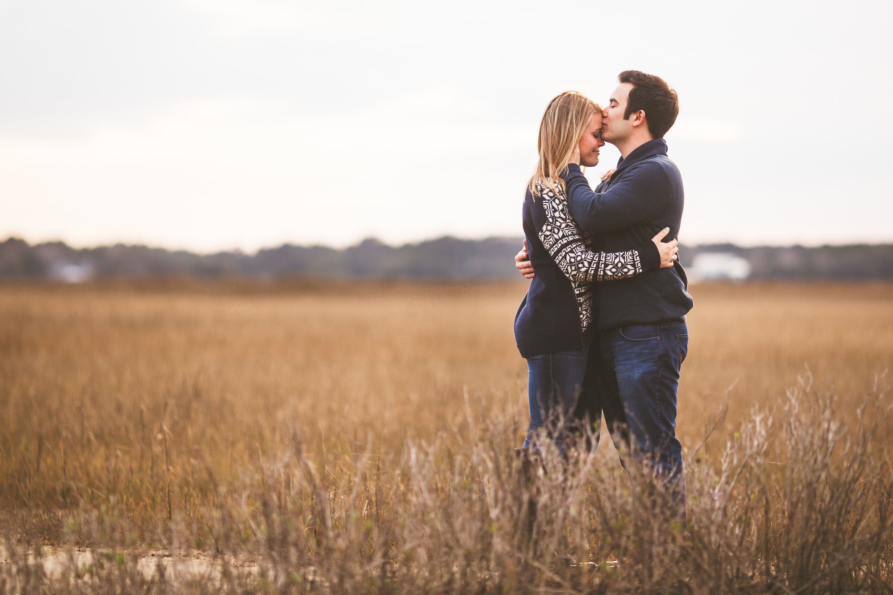

-

- 
-

-


Kelly Najarian — Maid of Honor
Kelly is the one and only sister of Tracy. From day one Tracy has been so proud to be Kelly’s “big sistow.” From countless hours playing Barbies, horses, and pool rescue to traveling the world together, these sisters have a very special bond. Tracy has been so lucky and honored to share her childhood with someone as special as Kelly. Kelly has such a genuine heart, one that lights up with children, good food, travel, and family. Kelly and Tracy have a language all their own, one that stems from a lifetime of silliness, honesty, and true love for one another. She is currently receiving her degree in speech pathology from North Eastern University in Boston, MA and dreams of working with children with speech and language impairments.
Mary Tew
Mary is Matt’s sister and is the energetic mother of the two flower girls, and the wife to a very handsome groomsman. She is an elementary art teacher in Charlotte, North Carolina. Mary has a true passion for the creative arts and loves to share this love with her beautiful daughters. It doesn’t take long after meeting Mary to know that she is an extremely loving, passionate, and funny person.
Lauren Hammang
Lauren and Tracy met freshman year in their very first occupational therapy class. Years later their friendship grew very strong after they went to Nicaragua together on a service trip. Lauren is an amazing pediatric occupational therapist at Texas Children’s hospital in Houston Texas. Lauren has an incredible patience about her and is truly the best listener. She goes above and beyond in showing how much she loves and cares for the people in her life. Lauren has such a knack for always making the best and most fun of any situation.
Michelle Pomar
Michelle is the sweetest most lovable person you will ever meet. She has a true knack for always being able to make people laugh with her quirky, lovely, and charming self. Michelle was one of Tracy’s very first friends in college, meeting as hall mates freshman year. They ended up graduating together as occupational therapists 5 and half years later. Michelle is a dedicated occupational therapist in Connecticut.
Leah Hitchcock
Leah is the type of girl that shines so bright in every room she is in. She is Tracy’s cousin, one that she had the ultimate pleasure of growing up with. Leah has the biggest heart. She is also one of the most hysterical people you will ever meet. Leah is a senior at UMass Amherst. She is a devoted rower and captain on the university’s crew team who is aspiring to work in law or politics. Leah is majoring in political science with a certificate in film.

Tess Hitchcock
Tess is a true teacher in every sense of the word. Tracy had so much fun growing up with her cousin Tess, who from a young age was always very passionate about art and helping others to learn. Tess has the sweetest soul. It is rare to find someone who has a truly patient and kind heart like Tess does. She has recently graduated from the Maine College of Art with a master’s degree in teaching and is the art teacher at a middle school in Maine.

Madalyn Hull
Madalyn and Tracy met for the first time in Tracy’s drive way in Maine when they were ten years old. Tracy and Madalyn were instant friend cousins. They had the opportunity to grow closer as adults when they moved in together when Tracy moved to Charleston. Madalyn is such an intelligent person, who has a true ability of being able to listen and give incredible advice. She was the first member of Tracy’s family to meet Matt and give her seal of approval the day she met him. Madalyn is currently taking classes and working at as a medical assistant with plans to apply to medical school.
Evelyn — Flower Girl
Evelyn is Mary and Nathaniel’s daughter. She is a very smart and sweet 5 year old who is in kindergarten. Evelyn is a budding artist and enjoys playing with her dolls, crafts, and younger sister Penelope. She is currently practicing the art of swimming at her weekly lessons. She is a huge Disney fan and knows everything about each Disney princess, especially Elsa.

Penelope — Flower Girl
Penelope is also the daughter of Mary and Nathaniel. She has a very spunky, silly personality. Penelope spends her free time sucking her fingers, snuggling, and keeping up with her big sister Evelyn. Penelope especially enjoys eating.
Photos by TTT